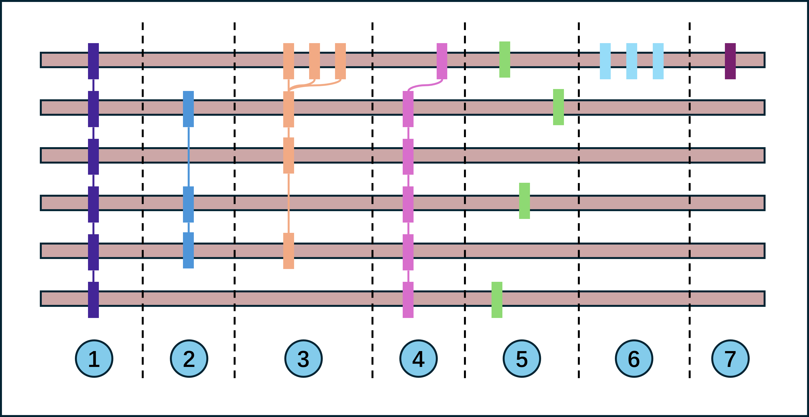

前言
由于我主要从事于单倍体基因组组装与功能注释，对于二倍体乃至多倍体的复杂基因组分析，我往往束手无策。近日，我阅读了一篇关于多倍体甘蔗基因组分析的文章，受到了很大的启发，先在这里写一套标准的操作流程和分类体系，后续实操时也不至于无头乱撞。
值得注意的是，在多倍体分析时，我们不能再拘泥于高中的知识点。例如，十倍体的一套单倍体染色体组中有 8 条染色体，但是一条染色体的同源染色体数目不一定非得是 10 条（严谨来讲，我们不应该用几倍体这个概念）。
标准分析流程
多倍型基因组注释策略组装文件一定是单倍体分型组装的 fasta 文件，单倍体分型分析组装流程我们后面再说，在这里，我们只需要知道的是生物细胞里面每一条实际存在的染色体，我们都通过测序和算法得到了它们的序列并存储与 fasta 文件中。
基因全量结构预测
相较于普通分析的基因结构预测，这里多了一个“全量”。这很好理解，此阶段的目标是“宁滥勿缺”，最大程度捕获所有单倍型染色体上的潜在编码基因。我们会基于 AUGUSTUS 等软件结合多证据（例如转录组数据和蛋白组数据）进行预测，得到所有信息的 GFF 注释文件。在这一步，我们会得到巨大量的基因信息，我们需要进行聚类再分类。
聚类与分类
我们先来看我们最终的目的是要把基因分成这些概念类：

我们共有几个字段来描述不同类型：
- 同线：同一位置
- 同源：同一来源
- 等位：同一位置，有略微区别，这个概念有点古老，等位基因一定是同源的。
- 全单倍型共有/多单倍型共有/单倍型独有
我们就可以玩排列组合了：
- 完全共线，等位，全单倍型共有
- 完全共线，等位，多单倍型共有
- 部分共线，等位+旁系同源，多单倍型共有
- 部分共线，等位，多单倍型共有
- 非共线，等位/同源，多单倍型共有
- 无要求，旁系同源，无要求
- 无要求，无要求，单倍型独有